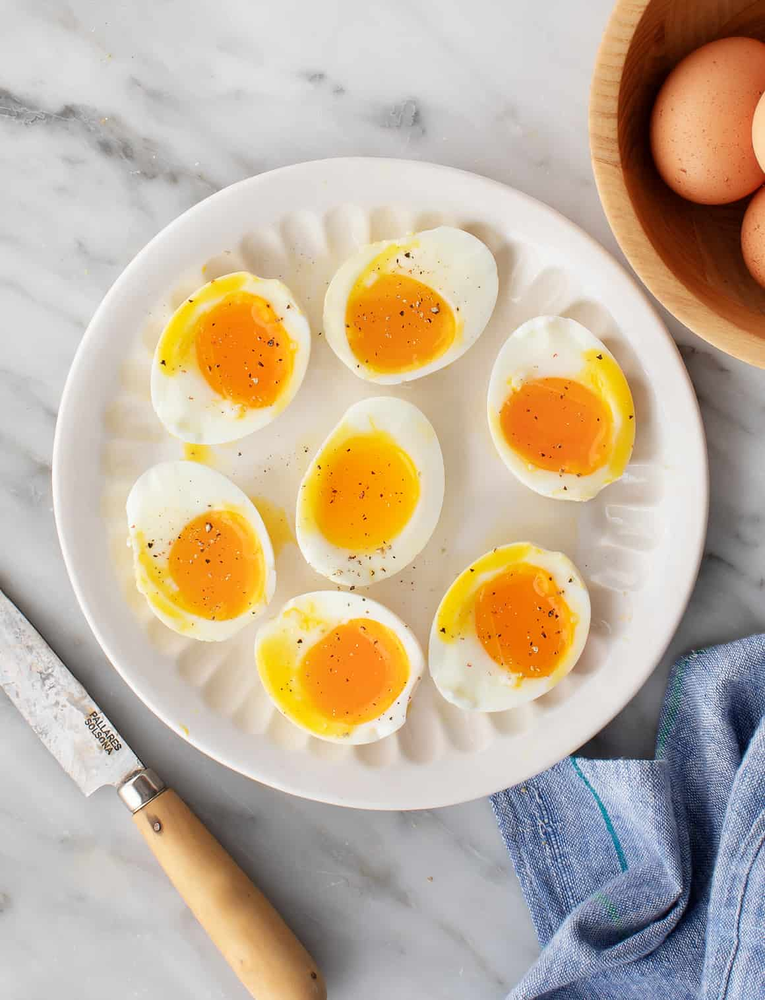

Recipes
Soft-boiled Eggs

Description
There’s something so crave-able about a perfect soft boiled egg. The tender white, the runny yolk. If you ask me, it’s something everyone should know how to make. It takes minutes, it requires 1 ingredient, and it’s an easy way to add protein and healthy fats to just about anything! Want to round out a salad or turn a slice of toast into a meal? Put a soft boiled egg on it.
Ingredients
- 2 to 4 large eggs
- Sea salt
- Freshly ground black pepper
Steps
-
Fill a medium pot with water and bring to a boil.
Using a slotted spoon lower the eggs into the water and
let simmer for 7 minutes. Prepare a bowl of ice water.
-
Remove the eggs and immediately place into the ice water.
Let chill until the eggs are cool enough to handle.
-
Carefully crack the eggs to remove the shell. You can use
a spoon to loosen the egg from the shell.
-
Season eggs with salt and pepper to taste.
Source
https://www.loveandlemons.com/how-to-make-soft-boiled-eggs/